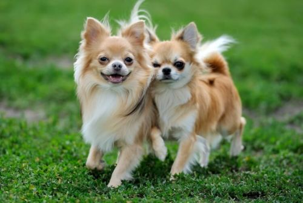

Caracteristicas
O cachorro é um mamífero quadrúpede (ou seja, anda sobre quatro patas) que se destaca por ter uma cauda e uma cobertura de pelos por todo o seu corpo. Entretanto, hoje em dia, graças às diversas raças caninas existentes, encontramos cães de todos os tamanhos, formas e cores. Por exemplo, em termos de dimensões, o menor cão, o Chihuahua, mede entre 15 e 25 cm de altura até a cernelha (ponto mais alto do ombro de um cachorro), enquanto a maior raça de cachorro do mundo, o Dogue Alemão, tem uma altura mínima de 80 cm até a cernelha.
A morfologia também é muito variável entre as características de um cachorro. Assim, encontramos cães com um focinho muito longo e outros com um focinho plano, os chamados cães braquicefálicos. Outro aspecto muito significativo da espécie é a cauda, que pode ser longa ou curta, na verdade, há até mesmo raças que nascem sem ela. A cauda é composta por um número variável de vértebras, e pode ter mais ou menos pêlos. As orelhas, dotadas de 18 músculos, são muito flexíveis e expressivas. Também não podemos deixar de falar da pelagem, que pode ser de todos os tipos de cores e padrões, bem como macia, áspera ou até dupla.
É um animal vivíparo e, se nos perguntamos sobre o habitat do cão, devemos saber que hoje em dia é muito complicado explicar onde vivem os cães, já que a maioria deles vive em cidades e vilas rurais, de mãos dadas com o homem - ou, neste caso, de patas dadas. No entanto, estudos recentes descobriram uma nova espécie de canídeo selvagem (Canis lupus hallstromi) que é considerada o elo perdido entre os primeiros canídeos e os cães domésticos nas terras altas da Nova Guiné.

A sociobiologia revela que os cachorros são animais gregários, o que significa que eles vivem em comunidades compostas de vários indivíduos. Mas também, hoje em dia, graças à domesticação e socialização do cachorro, contamos com a companhia de um animal que é especialmente sociável com membros de sua própria espécie e de outras espécies, como gatos, pessoas ou coelhos.
O temperamento dos cães pode ser muito variável e, ao contrário do que muitas pessoas acreditam, a raça não determina o temperamento de um cão. Além da socialização, a maneira de se comportar de um cachorro é influenciada pela genética e pelo aprendizado proporcionado pelo dono.
Entretanto, se formos mais a fundo nos hábitos dos cachorros, podemos ver que eles têm uma linguagem física muito completa, conhecida como "sinais de calma", assim como a capacidade de vocalizar. Esta é uma das características dos cães que mais frequentemente interessam aos cuidadores!
Alimentação
O que os cachorros comem? Muitas pessoas ainda se perguntam se o cão é onívoro ou carnívoro, entretanto, algumas das características morfológicas da espécie, como as garras, dentes afiados ou enzimas específicas, são características dos carnívoros facultativos.
Entretanto, como antecipamos no início do artigo, o cachorro também é um necrófago oportunista, o que tem permitido sua domesticação. De acordo com várias teorias, foi precisamente este procedimento que permitiu ao cão digerir o amido e, consequentemente, os materiais de origem vegetal.